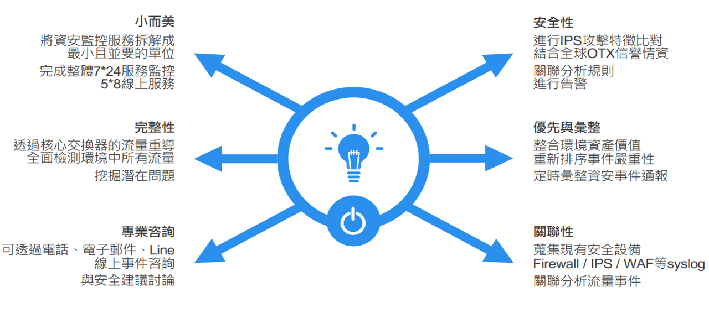

一、勒索病毒的防治與預防
2019年各大中小企業受到最嚴重的資安威脅為『勒索病毒』。您知道您的系統受到勒索病毒侵害嗎？您不知道但我們知道！本團隊透過自有技術， 提供監控平台並即時監控公司網路狀況，一旦檢測出已受害的電腦，會在黃金時間內通知該單位將被感染的電腦與其他網路隔離，以盡可能降低損害。
二、資安快篩服務
本圖隊採用自有技術開發而成的網路惡意活動檢測軟體，針對『封包監聽與分析』進行安全性檢測作業並依檢測結果提出相關風險報告，以供貴公司/單位了解潛在的資安風險。
三、弱點掃描服務
本團隊採用專業弱掃商用軟體（Nessus）進行系統弱點掃描，目前提供超過 5 萬個以上的漏洞和系統設定檢查，並提供相關弱點所對應的 CVE資訊和450個裝置及應用系統執行合規性稽核作業，由Tenable提供最新最完整的威脅及弱點，且即時更新，其中涵蓋多種作業系統，惡意程式及網路設備之檢測。 .....( 詳細內容)
四、滲透測試服務
滲透測試係利用系統化工具與流程，結合 STU SOC 中心（以下簡稱本團隊）資訊安全專家之專業知識、資訊安全技術及駭客工具資料庫，對於雙方所約定之目標系統進行安全強度測試及模擬駭客入侵，並提供客戶專屬測試報告及系統補強建議。
本服務將由本團隊專業的資通安全專家，配合 貴單位需求，從外部環境以攻擊者的角度對受測目標系統進行安全非破壞性的滲透測試，找出駭客可能之入侵管道，並利用各種滲透技術、攻擊手法、弱點攻擊程式、網站漏洞等技巧，來對目標主機進行遠端滲透測試，並將於測試完成後提供專業之評估報告、改善建議及專業諮詢，協助 貴單位做好各種資通安全防護措施。
五、資安監控維運中心暨威脅情資中心
六、資安教育訓練
隨著網路威脅增加及攻擊方式日漸複雜，衍生出許多企業資訊安全問題，政府及主管機關也愈見增加對企業應強化資訊安全風險管理之要求。然而威脅與攻擊的防範，除了運用科技工具以外；內部人員的資訊安全意識宣導與教育，更是資訊安全政策是否落實的一大關鍵成功因素。